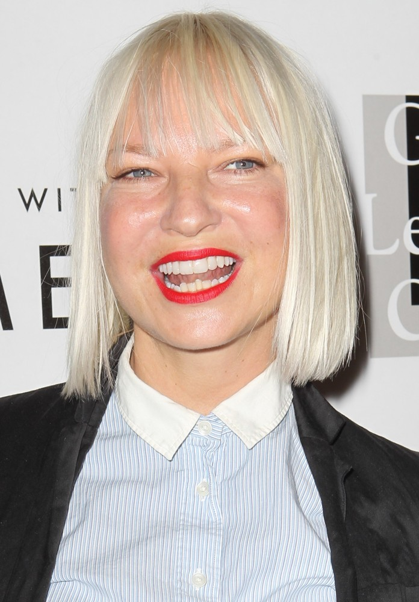
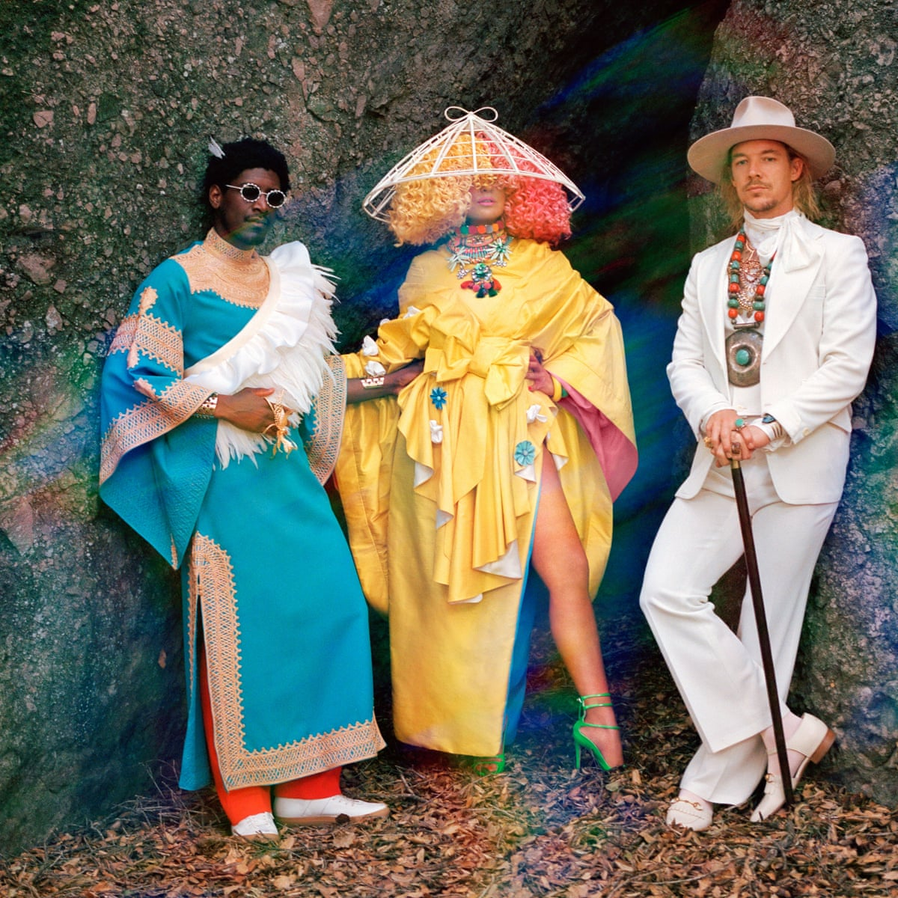
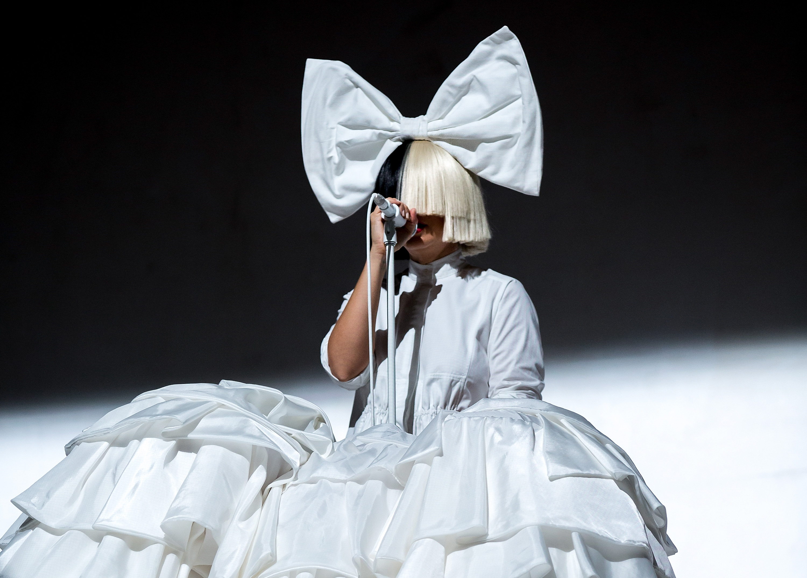

DAILY-TAINMENT

Sia Kate Isobelle Furler, better known as Sia, was born on December 18, 1975. She is a singer, songwriter, voice actor, and director from Australia. In the mid-1990s, she began her career as a singer in the acid jazz band Crisp in Adelaide. When Crisp dissolved in 1997, she released her debut studio album, OnlySee, in Australia. She relocated to London and sang with the British group Zero 7. Sia's second studio album, Healing Is Difficult, was released in 2001, and her third, Colour the Small One, was published in 2004.
Sia relocated to New York City in 2005 and toured the country. “Some People Have Real Problems” and “We Are Born”, her fourth and fifth studio albums, were released in 2008 and 2010, respectively. Each was certified gold by the Australian Recording Industry Association and received more attention than her previous releases. Sia made her debut as a solo recording artist in 2014, when her sixth studio album, "1000 Forms of Fear", arrived at No. 1 on the Billboard 200, spawning the top-ten single "Chandelier" and a trilogy of music videos co-directed by Sia and featuring child dancer Maddie Ziegler. Sia has generally worn a wig that covers her face to safeguard her privacy since then.

"This Is Acting," her seventh studio album, yielded her first Billboard Hot 100 number one song, "Cheap Thrills." The same year, Sia launched her Nostalgic for the Present Tour, which included dance by Ziegler and others, as well as other elements of performance art. "Everyday Is Christmas," her eighth studio album, was released in 2017 and republished in 2018 with three extra tracks. In 2018, she formed the band LSD alongside Labrinth and Diplo, and their self-titled first album was released in April 2019.
